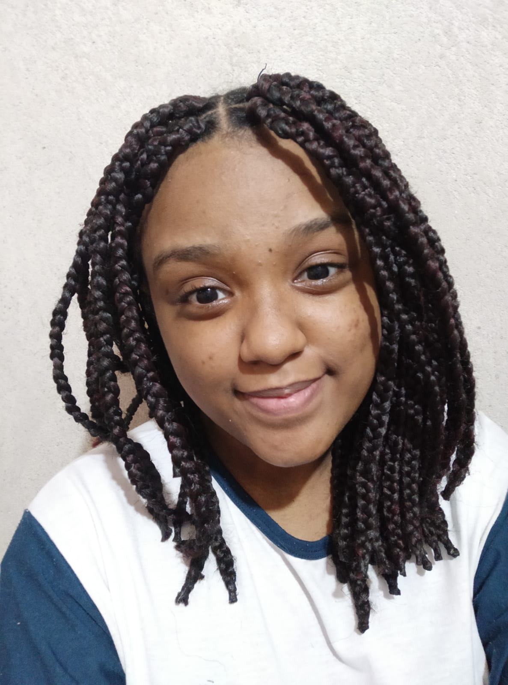

Aline Rocha de Jesus (RA: 22.123.106-1) reside em São Bernardo do Campo, sempre dependeu do transporte público como principal meio de locomoção. Seu bairro é caracterizado pela presença de apenas uma linha de ônibus, o qual chega a demorar de uma em uma hora em dias úteis, o que a impunha uma espera prolongada.
Bianca Silva Oliveira (RA: 22.123.113-7) tem 19 anos, sempre residiu em São Paulo. Utiliza o transporte público como meio de locomoção principal. Prefere andar de metrô para se locomover por ser um meio mais rápido, não ter um tempo de espera tão longo e por ser mais seguro.
Carolina Gonçalves Miranda (RA: 22.123.088-1) é moradora de São Bernardo do Campo desde que se entende por gente, anda muito a pé e já viu de tudo nas ruas da cidade. Gosta de pegar transporte público, exceto quando está muito lotado, quando quebra no caminho ou demora muito pra passar (ou seja, quase nunca). Se descreveria como sendo aquele tipo de pessoa que não compra um celular bom com medo de ser assaltada.
Ester Pereira dos Santos Nascimento (RA: 22.123.110-3) moradora de São Bernardo do Campo, utiliza em média 1 ou 2 ônibus por dia para ir e voltar da faculdade. Os ônibus da cidade são velhos, sem segurança e demoram muito para chegar até o ponto. Por isso, um trajeto que duraria 40 minutos até a sua casa demora 1 hora. Isso a afeta diariamente, pois ela teme ser assaltada ou sofrer outros tipos de crime.
Gabrielly Thamirys Aparecida Bomfim (RA: 22.123.091-5) tem 18 anos, reside em Mauá e utiliza 3 meios de transporte público pra ir e voltar da faculdade. A falta de infraestrutura para o transporte público e a criminalidade nos pontos de ônibus e estações afetam diretamente sua rotina e seu trajeto.
Luana de Almeida Ferreira (RA: 22.123.109-5) tem 20 anos, reside em São Bernardo do Campo e às vezes utiliza transporte público. Acredita que a segurança desse transporte pode ser melhorada.
FEI - Campus SBC
Prof.Dr. Fagner de Assis Moura Pimentel
Prof.Dr. Diego Genu Klautau
Prof.Dr. Raul Cesar Gouveia Fernandes